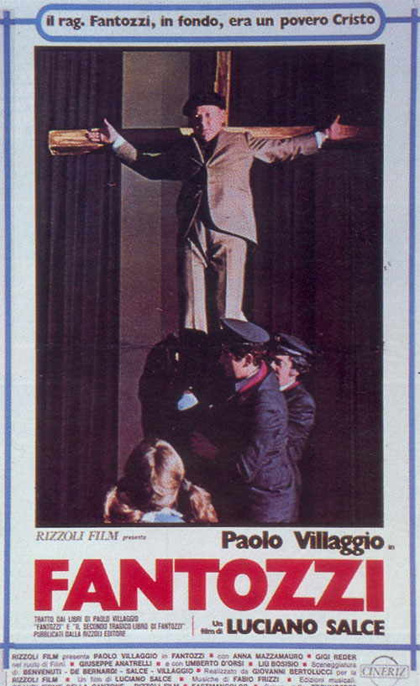

Fantozzi's Movies

Based on Paolo Villaggio's books "Fantozzi" and "Il secondo, tragico Fantozzi", which are popular in Italy, this film tells the story of an unfortunate accountant's life over the course of one year, shown in a variety of sketches, segments and provocative sequences making Fantozzi a very unlucky person indeed.
From IMDB